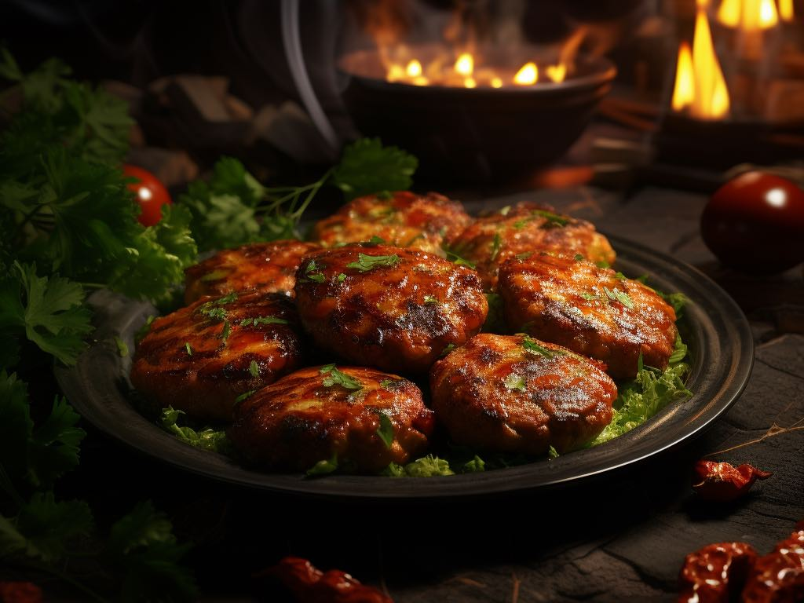

Ingredients for Galouti Kebab (Mutton) 🍖
- 500g Mutton Mince (boneless, finely minced) 🐑
- 1 Onion (finely chopped) 🧅
- 1/4 Cup Fresh Coriander (chopped) 🌿
- 2 tbsp Ginger-Garlic Paste 🧄
- 2 Green Chilies (finely chopped) 🌶️
- 1 tsp Red Chili Powder 🌶️
- 1 tsp Garam Masala 🌿✨
- 1/2 tsp Turmeric Powder ✨
- 1 tsp Cumin Powder 🌱
- 1/2 tsp Black Pepper Powder 🌶️
- 2 tbsp Raw Papaya Paste (for tenderizing) 🍃
- 1 tbsp Lemon Juice 🍋
- 2 tbsp Ghee (clarified butter) 🧈
- 1 tbsp Cashew Paste (optional, for richness) 🌰
- 2 tbsp Cream 🧴
- Salt to taste 🧂
- 1 tbsp Cornflour or Rice Flour (for binding) 🌾
- Ghee or Oil for frying 🧈🍳
Steps 🍴
- In a large mixing bowl, combine the mutton mince, chopped onions, fresh coriander, green chilies, and ginger-garlic paste. 🧅🌿🌶️
- Add red chili powder, garam masala, cumin powder, black pepper powder, turmeric powder, and salt to the mixture. 🌶️✨🌱
- Add the raw papaya paste, lemon juice, cashew paste (optional), and cream. Mix everything well until all the ingredients are evenly combined. 🍋🌰🧴
- Gradually add cornflour or rice flour to the mixture to help bind it. Knead the mixture for 5-7 minutes, ensuring it's smooth and well-combined. 🌾
- Cover the mixture and refrigerate for at least 2 hours (or overnight) to allow the flavors to meld together and the kebab mixture to set. 🕒
- After chilling, divide the mixture into small portions and shape them into round or oval-shaped patties, resembling kebabs. 🍖
- Heat ghee or oil in a shallow pan over medium heat. Fry the kebabs on both sides until they are golden brown and crispy on the outside, while remaining soft and juicy inside. 🧈🍳
- Remove the kebabs from the pan and drain excess oil on paper towels. 🍽️
- Serve the Galouti Kebabs hot, garnished with onion rings, fresh coriander, and lemon wedges. 🍋🌿